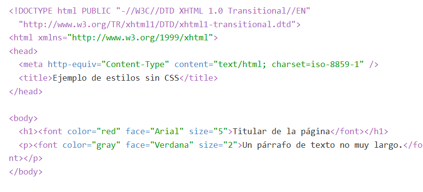

Las hojas de estilos aparecieron poco después que el lenguaje de etiquetas SGML, alrededor del año 1970. Desde la creación de SGML, se observó la necesidad de definir un mecanismo que permitiera aplicar de forma consistente diferentes estilos a los documentos electrónicos.
El gran impulso de los lenguajes de hojas de estilos se produjo con el boom de Internet y el crecimiento exponencial del lenguaje HTML para la creación de documentos electrónicos. La guerra de navegadores y la falta de un estándar para la definición de los estilos dificultaban la creación de documentos con la misma apariencia en diferentes navegadores.
La propuesta CHSS fue realizada por Håkon Wium Lie y SSP fue propuesto por Bert Bos. Entre finales de 1994 y 1995 Lie y Bos se unieron para definir un nuevo lenguaje que tomaba lo mejor de cada propuesta y lo llamaron CSS (Cascading Style Sheets).
En 1995, el W3C decidió apostar por el desarrollo y estandarización de CSS y lo añadió a su grupo de trabajo de HTML. A finales de 1996, el W3C publicó la primera recomendación oficial, conocida como "CSS nivel 1". A principios de 1997, el W3C decide separar los trabajos del grupo de HTML en tres secciones: el grupo de trabajo de HTML, el grupo de trabajo de DOM y el grupo de trabajo de CSS.
El 12 de Mayo de 1998, el grupo de trabajo de CSS publica su segunda recomendación oficial, conocida como "CSS nivel 2". La versión de CSS que utilizan todos los navegadores de hoy en día es CSS 2.1, una revisión de CSS 2 que aún se está elaborando (la última actualización es del 8 de septiembre de 2009). Al mismo tiempo, la siguiente recomendación de CSS, conocida como "CSS nivel 3", continúa en desarrollo desde 1998 y hasta el momento sólo se han publicado borradores.
Es un lenguaje de hojas de estilos creado para controlar el aspecto o presentación de los documentos electrónicos definidos con HTML y XHTML. Es muy importante ya que es loq eu nos permite ponerle estilos a nuestra página web sobre todo si va a ser una página web compleja. Un ejemplo de CSS sería modificar esta frase:
"Hola Mundo"
El CSS se peude apliacar tanto dentro fichero HTML o en otro fichero aparte .css el cual se enlaza con el fichero HTML
Antes de que se generalizara el uso de CSS, los diseñadores de páginas web utilizaban etiquetas HTML especiales para modificar el aspecto de los elementos de la página. Ejemplo:
Una vez que se implemento CSS la solución para modificar todo lo anterior era mucho más fácil. Ejemplo:
EL CSS también nos permite cambiar la opacidad de una parrafo.Ejemplo:
CAMBIAR OPACIDAD
El código que utilizado es el siguiente:
#opacidad { opacity: 0.2; color:#000aff; text-align: center; font-size: 30px; font-family: cursive; font-display: swap; }
Concretamente es la instrucción opacity.
Otro de los ejemplos que podemos hacer con CSS es cambiar la posición del texto.Ej:
POSICION DEL TEXTO
El codigo utilizado es:
#posicion { color:#08e332; text-align: right; font-size: 30px; font-family: cursive; font-display: swap; }
Más en concreto es la instrucción text-align
Los últimos años y con la aparición de la web 2.0 Internet ha cambiado y se ha transformado para dar acogida a todas las necesidades de sus usuarios, y por esa razón los sitios web también ha tenido que cambiar mucho. Hace unos 3 o 4 años, ahí por 2011 se empezó a hablar de los sitios web responsive o adaptables a todo tipo de pantallas y dispositivos fuese cual fuese su tamaño, esta capacidad de adaptación de los sitios web se consiguió utilizando técnicas CSS avanzadas para su desarrollo o utilizando frameworks CSS como por ejemplo Bootstrap.
http://librosweb.es/libro/css/
https://es.wikipedia.org/wiki/Hoja_de_estilos_en_cascada